Transformer的Attention计算¶
学习目标¶
- 复习Attention的计算过程
- 理解用矩阵乘法实现Attention的性能瓶颈
1. Transformer的Self-Attention计算图解¶
Transformer模型来自论文Attention Is All You Need。这个模型最初是为了提高机器翻译的效率，它的Self-Attention机制和Position Encoding可以替代RNN。因为RNN是顺序执行的，t时刻没有完成就不能处理t+1时刻，因此很难并行。但是后来发现Self-Attention效果很好，在很多其它的地方也可以使用Transformer模型。这包括著名的OpenAI GPT和BERT模型，都是以Transformer为基础的。
现在Transformer模型已经是大模型时代的绝对基石与事实上的统一架构标准）。它不仅彻底奠定了当前生成式AI的繁荣，更演变成了跨越文本、视觉、音频、多模态、具身智能乃至科学计算的万物互联通用底座。无论底层硬件、并行策略或优化算法如何迭代，Transformer 及其衍生的高效注意力范式依然是驱动整个人工智能浪潮狂飙突进的核心引擎。
因为我们的目标是学习Flash Attention，所以这里主要关注Self-Attention的计算过程。
1.1 模型概览¶
我们首先把模型看成一个黑盒子，如下图所示，对于机器翻译来说，它的输入是源语言(法语)的句子，输出是目标语言(英语)的句子。

把黑盒子稍微打开一点，Transformer都可以分成Encoder和Decoder两个部分，如下图所示。
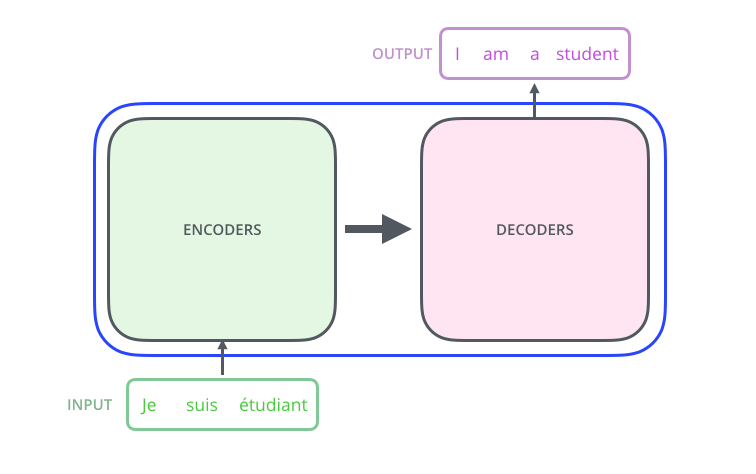
再展开一点，Encoder由很多(6个)结构一样的Encoder堆叠(stack)而成，Decoder也是一样。如下图所示。注意：每一个Encoder的输入是下一层Encoder输出，最底层Encoder的输入是原始的输入(法语句子)；Decoder也是类似，但是最后一层Encoder的输出会输入给每一个Decoder层，这是Attention机制的要求。

每一层的Encoder都是相同的结构，它由一个Self-Attention层和一个前馈网络(全连接网络)组成，如下图所示。
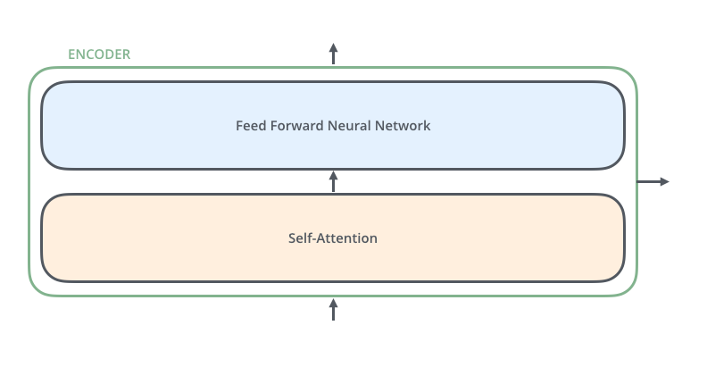
每一层的Decoder也是相同的结构，它除了Self-Attention层和全连接层之外还多了一个普通的Attention层，这个Attention层使得Decoder在解码时会考虑最后一层Encoder所有时刻的输出。它的结构如下图所示。

1.2 加入Tensor¶
前面的图示只是说明了Transformer的模块，接下来我们加入Tensor，了解这些模块是怎么串联起来的。输入的句子是一个词(ID)的序列，我们首先通过Embedding把它变成一个连续稠密的向量，如下图所示。
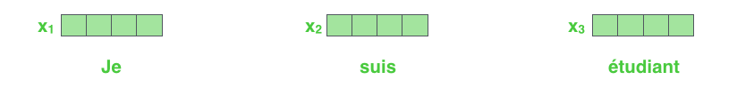
Embedding之后的序列会输入Encoder，首先经过Self-Attention层然后再经过全连接层，如下图所示。

我们在计算z_i时需要依赖所有时刻的输入x_1,...,x_n，不过我们可以用矩阵运算一下子把所有的z_i计算出来(后面介绍)。而全连接网络的计算则完全是独立的，计算i时刻的输出只需要输入z_i就足够了，因此很容易并行计算。下图更加明确的表达了这一点。图中Self-Attention层是一个大的方框，表示它的输入是所有的x_1,...,x_n，输出是z_1,...,z_n。而全连接层每个时刻是一个方框(但不同时刻的参数是共享的)，表示计算r_i只需要z_i。此外，前一层的输出r_1,...,r_n直接输入到下一层。
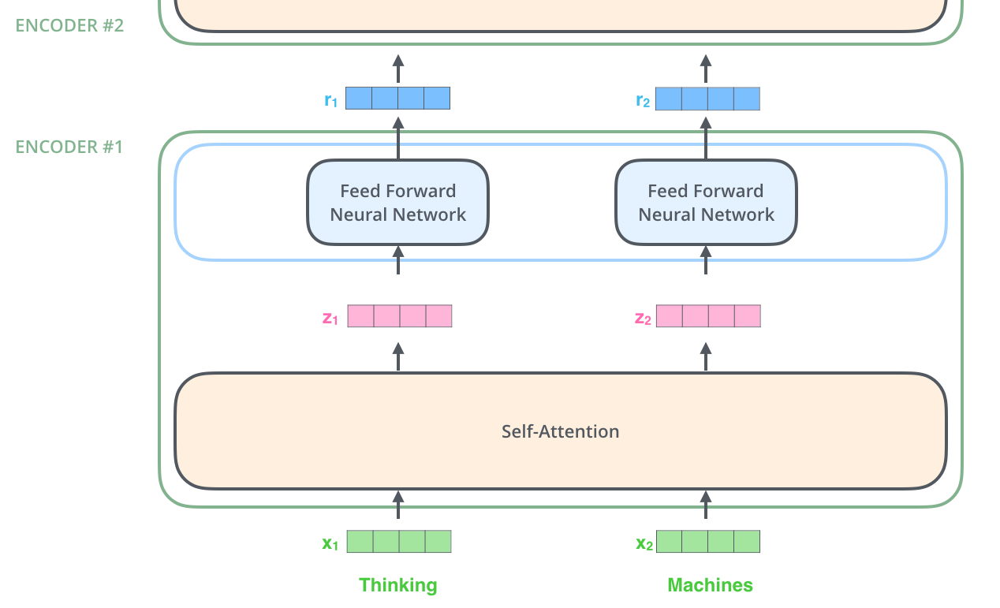
1.3 Self-Attention简介¶
比如我们要翻译如下句子"The animal didn't cross the street because it was too tired"(这个动物无法穿越马路，因为它太累了)。这里的it到底指代什么呢，是animal还是street？要知道具体的指代，我们需要在理解it的时候同时关注所有的单词，重点是animal、street和tired，然后根据知识(常识)我们知道只有animal才能tired，而street是不能tired的。Self-Attention用Encoder在编码一个词的时候会考虑句子中所有其它的词，从而确定怎么编码当前词。如果把tired换成narrow，那么it就指代的是street了。
而LSTM(即使是双向的)是无法实现上面的逻辑的。为什么呢？比如前向的LSTM，我们在编码it的时候根本没有看到后面是tired还是narrow，所有它无法把it编码成哪个词。而后向的LSTM呢？当然它看到了tired，但是到it的时候它还没有看到animal和street这两个单词，当然就更无法编码it的内容了。
当然多层的LSTM理论上是可以编码这个语义的，它需要下层的LSTM同时编码了animal和street以及tired三个词的语义，然后由更高层的LSTM来把it编码成animal的语义。但是这样模型更加复杂。
下图是模型的最上一层(下标0是第一层，5是第六层)Encoder的Attention可视化图。这是tensor2tensor这个工具输出的内容。我们可以看到，在编码it的时候有一个Attention Head(后面会讲到)注意到了Animal，因此编码后的it有Animal的语义。

1.4 Self-Attention详细介绍¶
下面我们详细的介绍Self-Attention是怎么计算的，首先介绍向量的形式逐个时刻计算，这便于理解，接下来我们把它写出矩阵的形式一次计算所有时刻的结果。
对于输入的每一个向量(第一层是词的Embedding，其它层是前一层的输出)，我们首先需要生成3个新的向量Q、K和V，分别代表查询(Query)向量、Key向量和Value向量。Q表示为了编码当前词，需要去注意(attend to)其它(其实也包括它自己)的词，我们需要有一个查询向量。而Key向量可以认为是这个词的关键的用于被检索的信息，而Value向量是真正的内容。
我们对比一下普通的Attention(Luong 2015)，使用内积计算energy的情况。如下图所示，在这里，每个向量的Key和Value向量都是它本身，而Q是当前隐状态h_t，计算energy e_tj的时候我们计算Q(h_t)和Key(\bar{h}_j)。然后用softmax变成概率，最后把所有的\bar{h}_j加权平均得到context向量。
而Self-Attention里的Query不是隐状态，并且来自当前输入向量本身，因此叫作Self-Attention。另外Key和Value都不是输入向量，而是输入向量做了一下线性变换。当然理论上这个线性变换矩阵可以是Identity矩阵，也就是使得Key=Value=输入向量。因此可以认为普通的Attention是这里的特例。这样做的好处是模型可以根据数据从输入向量中提取最适合作为Key(可以看成一种索引)和Value的部分。类似的，Query也是对输入向量做一下线性变换，它让系统可以根据任务学习出最适合的Query，从而可以注意到(attend to)特定的内容。
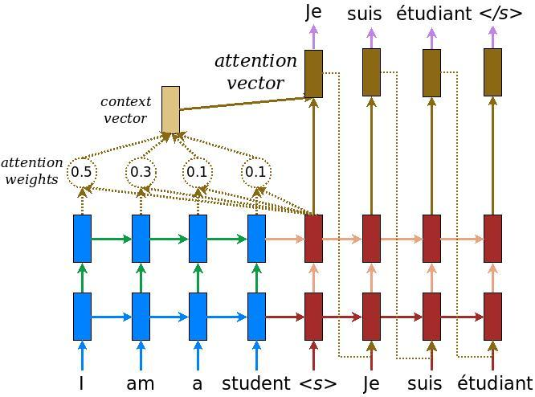
具体的计算过程如下图所示。比如图中的输入是两个词"thinking"和"machines"，我们对它们进行Embedding(这是第一层，如果是后面的层，直接输入就是向量了)，得到向量x_1,x_2。接着我们用3个矩阵分别对它们进行变换，得到向量q_1,k_1,v_1和q_2,k_2,v_2。比如q_1=x_1 W^Q，图中x_1的shape是1x4，W^Q是4x3，得到的q_1是1x3。其它的计算也是类似的，为了能够使得Key和Query可以内积，我们要求W^K和W^Q的shape是一样的，但是并不要求W^V和它们一定一样(虽然实际论文实现是一样的)。

每个时刻t都计算出Q_t,K_t,V_t之后，我们就可以来计算Self-Attention了。以第一个时刻为例，我们首先计算q_1和k_1,k_2的内积，得到score，过程如下图所示。
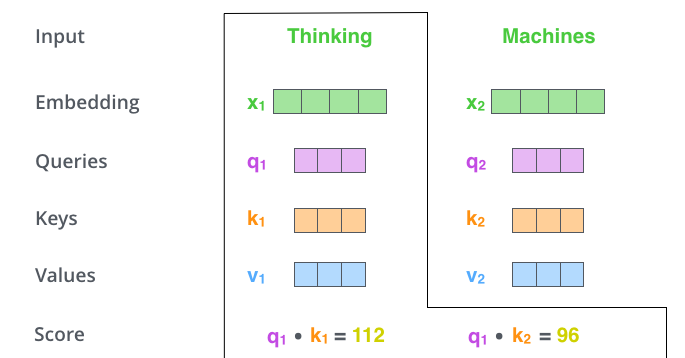
接下来使用softmax把得分变成概率，注意这里把得分除以8(\sqrt{d_k})之后再计算的softmax，根据论文的说法，这样计算梯度时会更加稳定(stable)。计算过程如下图所示。
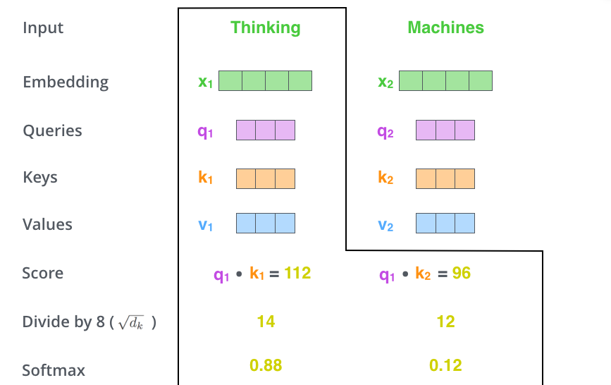
接下来用softmax得到的概率对所有时刻的V求加权平均，这样就可以认为得到的向量根据Self-Attention的概率综合考虑了所有时刻的输入信息，计算过程如下图所示。
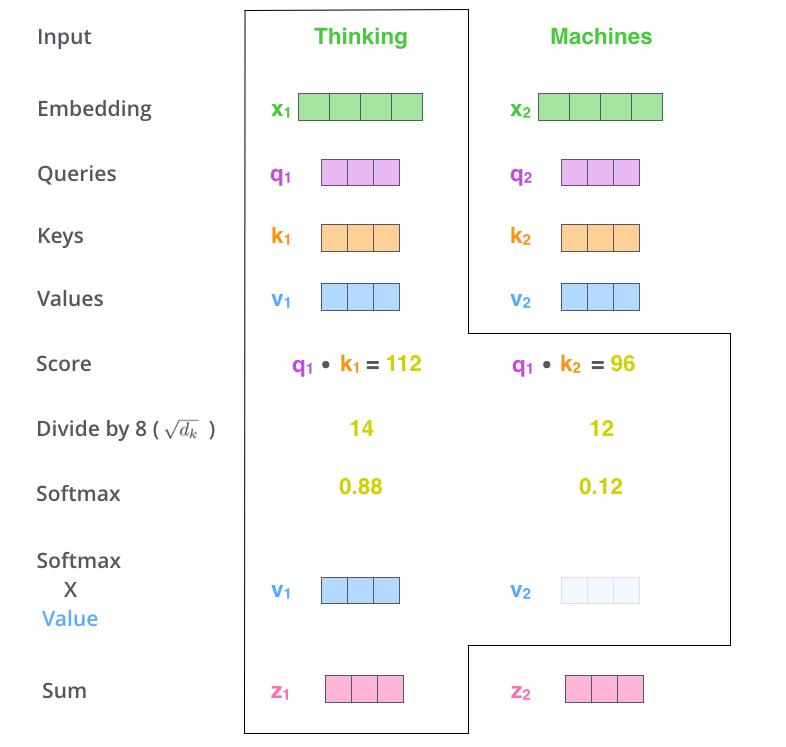
这里只是演示了计算第一个时刻的过程，计算其它时刻的过程是完全一样的。
1.5 矩阵计算¶
前面介绍的方法需要一个循环遍历所有的时刻t计算得到z_t，我们可以把上面的向量计算变成矩阵的形式，从而一次计算出所有时刻的输出，这样的矩阵运算可以充分利用硬件资源(包括一些软件的优化)，从而效率更高。
第一步还是计算Q、K和V，不过不是计算某个时刻的q_t,k_t,v_t了，而是一次计算所有时刻的Q、K和V。计算过程如下图所示。这里的输入是一个矩阵，矩阵的第i行表示第i个时刻的输入x_i。
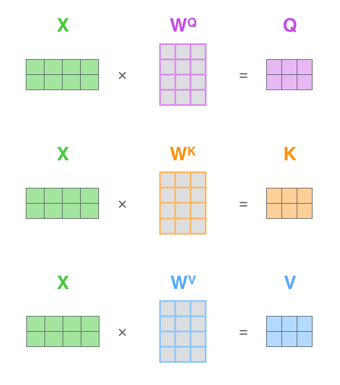
接下来就是计算Q和K得到score，然后除以(\sqrt{d_k})，然后再softmax，最后加权平均得到输出。全过程如下图所示。
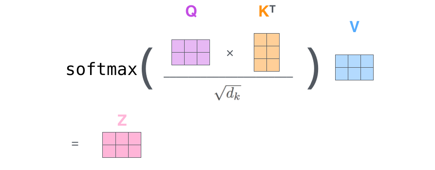
下面是从向量到矩阵乘法的详细推导过程。
1.5.1 定义符号与矩阵形状¶
在注意力机制中：
- 假设我们有 N 个查询（Query），每个维度的特征长度是 d。我们将它们组成一个 查询矩阵 Q，形状为 N \times d。其中，第 i 行就是第 i 个查询向量 q_i^T（大小为 1 \times d）。
- 假设我们有 M 个键（Key），每个维度的特征长度也是 d。我们将它们组成一个 键矩阵 K，形状为 M \times d。其中，第 j 行就是第 j 个键向量 k_j^T（大小为 1 \times d）。
注意：在数学上，向量通常指列向量。所以我们原始的q_i是一个长度为d的列向量，我们把它的转置q_i^T作为Q的第i行。
1.5.2 看单个 Query q_i 是如何与所有 Key 计算的¶
对于某一个特定的查询 q_i，它需要和所有的键 k_1, k_2, \dots, k_M 分别做内积，得到一行的 Score（得分）：
现在我们看看怎么用矩阵运算来表达这个过程：
- 键矩阵 K 的形状是 M \times d，它的每一行是一个键 k_j^T。
- 如果我们把 K 进行 转置，得到 K^T，它的形状就变成了 d \times M。此时，K^T 的 每一列 正好就是对应的键向量 k_j（大小为 d \times 1）。
- 那么，用单行向量 q_i^T（大小 1 \times d）去乘以转置后的矩阵 K^T（大小 d \times M）：
根据矩阵乘法的定义，结果是一个大小为 1 \times M 的行向量，其第 j 个元素正是 q_i^T 与 K^T 第 j 列（即 k_j）的内积 q_i^T k_j。
1.5.3 扩展到所有的 Query（得到 QK^T）¶
上一步我们算出了 单个 查询 q_i 与所有键的得分。如果我们的输入有 N 个查询，也就是有 N 个行向量 q_1^T, q_2^T, \dots, q_N^T，我们可以把它们上下堆叠起来，组成完整的矩阵 Q（形状为 N \times d）：
现在，我们将整个矩阵 Q 乘以 K^T：
1.5.4 得出结论¶
最终得到的矩阵 QK^T 的维度是：
- 这个矩阵的每一行，分别对应着每一个 q_i 与所有 k_j 的点积得分。
- 这就是为什么在代码和公式中，计算 Attention Score 总是写成 QK^T 的原因——它通过一次矩阵乘法，同时完成了所有 Query 与所有 Key 之间的两两内积计算。
在 GPU 上，这种矩阵乘法可以完美地利用硬件的并行计算单元（如 Tensor Core）进行加速，这也是现代大模型能高效处理海量文本的核心原因。
1.6 Multi-Head Attention¶
这篇论文还提出了Multi-Head Attention的概念。其实很简单，前面定义的一组Q、K和V可以让一个词attend to相关的词，我们可以定义多组Q、K和V，它们分别可以关注不同的上下文。计算Q、K和V的过程还是一样，这不过现在变换矩阵从一组(W^Q,W^K,W^V)变成了多组(W^Q_0,W^K_0,W^V_0) ，(W^Q_1,W^K_1,W^V_1)，...。如下图所示。

对于输入矩阵(time_step, num_input)，每一组Q、K和V都可以得到一个输出矩阵Z(time_step, num_features)。如下图所示。
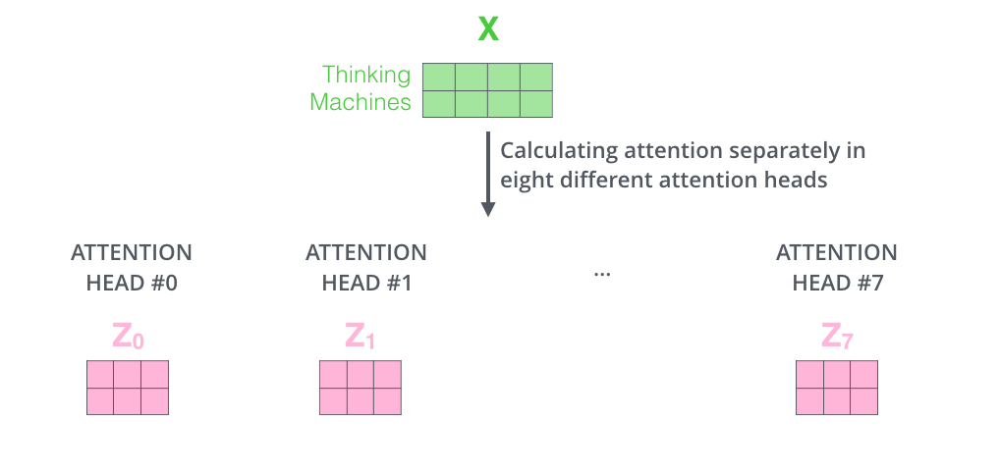
但是后面的全连接网络需要的输入是一个矩阵而不是多个矩阵，因此我们可以把多个head输出的Z按照第二个维度拼接起来，但是这样的特征有一些多，因此Transformer又用了一个线性变换(矩阵W^O)对它进行了压缩。这个过程如下图所示。
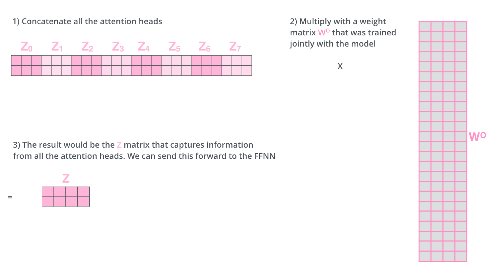
上面的步骤涉及很多步骤和矩阵运算，我们用一张大图把整个过程表示出来，如下图所示。
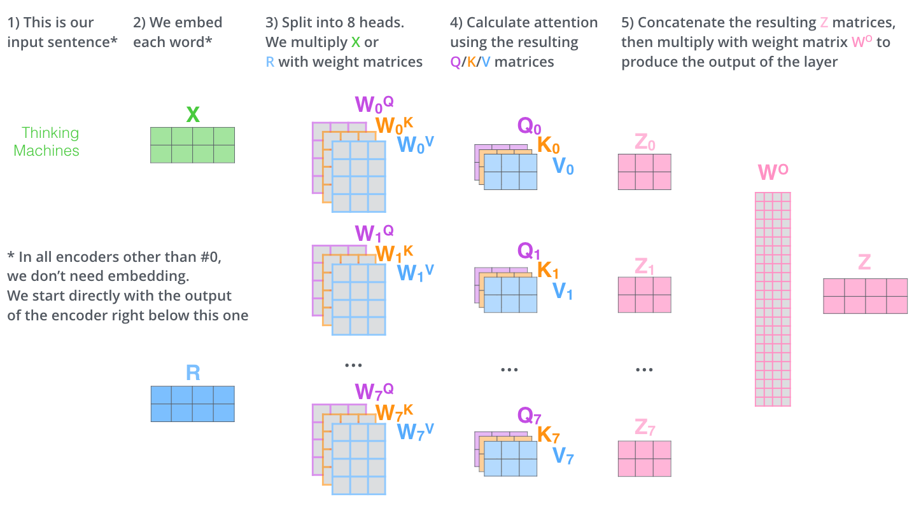
2. 一个具体例子¶
下面我们通过一个具体例子来手动计算一下。请同学们最好拿出纸和笔，一步一步计算全过程。后面所有的代码都会基于这个例子！
2.1 输入¶
我们假设输入经过变换矩阵W^Q, W^K, W^V之后得到矩阵Q, K, V。我们这里的例子里，Q, K, V \in \mathbb{R}^{6 \times 2}。它们的具体值为：
根据输入的张量 Q、K、V 以及自注意力机制公式：
已知输入维度：Q 和 K 的特征维度 d_k = 2（即列数为2），序列长度为 6。
2.2 计算 QK^T¶
Q 的形状为 (6, 2)，K 的形状为 (6, 2)，因此 K^T 的形状为 (2, 6)。相乘后得到一个 (6, 6) 的矩阵：
矩阵乘积 S=QK^T：
请仔细观察：输出的第一个结果(S_{11})，它等于Q的第1行表示的向量与K的第1行(K^T的第1列)表示的向量的内积。
因此S_{ij}等于Q的第i行的向量与K的第j行向量的内积，如果用Q_i表示第一个向量，K_j表示第二个向量。而且向量默认都是列向量，那么可以用Q_i^TK_j表示其内积。
2.3 缩放（Scale）¶
由于 d_k = 2，缩放因子 \sqrt{d_k} = \sqrt{2} \approx 1.414。将 S=QK^T 的每个元素除以 \sqrt{2}：
近似数值矩阵（便于理解后续 Softmax）：
2.4 应用 Softmax 归一化¶
对上一歩得到的矩阵按行（Row-wise）计算 Softmax（公式为 \text{Softmax}(x_i) = \frac{e^{x_i}}{\sum_j e^{x_j}}），使每一行的元素和为 1，得到注意力权重矩阵 W_{\text{attn}}（形状为 6 \times 6）：
以第一行为例计算：
- 行元素：[0.71, 1.41, 0, 0.71, 1.41, 0]
- 指数化：[e^{0.71}, e^{1.41}, e^0, e^{0.71}, e^{1.41}, e^0] \approx [2.03, 4.10, 1.00, 2.03, 4.10, 1.00]
- 求和：2.03 + 4.10 + 1.00 + 2.03 + 4.10 + 1.00 = 14.26
- 归一化后第一行约为：[0.14, 0.29, 0.07, 0.14, 0.29, 0.07] （其余各行依此类推，完成整行归一化）。
注意：Softmax函数是按行进行，并且不改变S的形状。
2.5 乘以 Value 矩阵 V 得到输出 O¶
已知 V 的形状为 (6, 2)：
最终的输出张量 O 通过权重矩阵与 V 相乘得到：
计算结果 O 的形状为 (6, 2)，每一行代表对应 Token 融合了全局上下文信息后的最终表示向量。具体结果为：
2.6 从输出的一行来看¶
以输出矩阵 O 的第二行（即针对第二个 Token 的计算 O_2）为例，详细的计算过程如下：
2.6.1. 提取第二个 Query 向量 \mathbf{q}_2¶
从矩阵 Q 中取出第二行：
2.6.2. 计算 \mathbf{q}_2 与所有 Key 的乘积（Score）¶
利用 K^T 的每一列（即各个 \mathbf{k}^T）进行点积运算：
逐项计算：
- 与 \mathbf{k}_1：0(1) + 2(1) = 2
- 与 \mathbf{k}_2：0(2) + 2(0) = 0
- 与 \mathbf{k}_3：0(0) + 2(1) = 2
- 与 \mathbf{k}_4：0(1) + 2(2) = 4
- 与 \mathbf{k}_5：0(2) + 2(1) = 2
- 与 \mathbf{k}_6：0(0) + 2(2) = 4
得到第二行的得分向量：
2.6.3. 缩放（Scale）¶
由于 d_k = 2，除以 \sqrt{d_k} = \sqrt{2} \approx 1.414：
2.6.4. 计算 Softmax 权重¶
对缩放后的向量求指数并归一化：
- 求指数（e^x）：\begin{pmatrix} 4.113 & 1.000 & 4.113 & 16.912 & 4.113 & 16.912 \end{pmatrix}
- 指数和：4.113 + 1.000 + 4.113 + 16.912 + 4.113 + 16.912 = 47.163
- 归一化权重向量 \mathbf{w}_2：
2.6.5. 与 Value 矩阵相乘得到 O_2¶
将权重向量 \mathbf{w}_2 与矩阵 V（包含 6 个向量 \mathbf{v}_1 到 \mathbf{v}_6）进行加权求和：
已知 V 的 6 行向量分别为： \mathbf{v}_1 = [1.0, 0.0], \mathbf{v}_2 = [0.0, 1.0], \mathbf{v}_3 = [2.0, 1.0], \mathbf{v}_4 = [1.0, 1.0], \mathbf{v}_5 = [0.0, 2.0], \mathbf{v}_6 = [2.0, 2.0]
代入计算：
- 计算第 1 个维度：
- 计算第 2 个维度：
最终得到输出矩阵 Z 的第二行：
3. 用矩阵乘法实现Attention的问题¶
虽然上述过程可以通过高效的矩阵乘法并行执行，但在处理 长序列（如大语言模型中 N 达到数千甚至数十万）时，这种标准实现会遇到严重的性能瓶颈，其根本原因在于 I/O 瓶颈（Memory-bound） 而非计算能力不足：
- 庞大的中间矩阵显存占用（O(N^2) 空间复杂度）： 标准注意力必须显式计算并存储整个 N \times N 的中间得分矩阵（如 QK^T 及其 \text{softmax} 结果）。当序列长度 N 很大时，这个矩阵的规模呈平方级暴增，极易导致 GPU 显存耗尽（OOM）。
- 频繁且低效的 HBM（高带宽显存）读写： GPU 的核心计算单元（SRAM，片上高速缓存）计算速度极快，但容量很小；而存放整个 N \times N 矩阵的主显存（HBM）容量虽大但读写带宽有限。标准实现在每一步操作（矩阵乘 \rightarrow 写回 HBM \rightarrow 缩放 \rightarrow 写回 HBM \rightarrow Softmax \rightarrow 写回 HBM \rightarrow 乘 V）中，都需要把巨大的中间矩阵在 HBM 和 SRAM 之间反复搬运。
- 计算单元长时间闲置： 由于大部分时间都耗费在等待显存数据传输上（即受限于内存带宽，属于 Memory-bound），GPU 宝贵的算力（FLOPs）被大量闲置，导致整体运行效率低下。
为了更直观地理解传统矩阵乘法实现 Self-Attention 为什么效率低，我们可以代入大模型中典型的实际参数来进行量化分析。
3.1. 典型的参数设定¶
假设我们处理一个常见的大语言模型任务：
- 序列长度 (N)：4096（例如较长的输入文本或上下文）
- 隐藏层维度 / 头维度 (d_k)：128（多头注意力机制中常见的单头维度）
- 数据精度：使用半精度浮点数（FP16），每个数据占 2 字节 (Bytes)。
3.2. 中间矩阵的显存开销（以 QK^T 为例）¶
在计算 QK^T 时，我们需要生成一个形状为 N \times N 的注意力得分矩阵：
- 矩阵元素总数：4096 \times 4096 = 16,777,216 个元素（约 1670 万个）
- 显存占用：16,777,216 \times 2 \text{ Bytes} \approx 33.55 \text{ MB}
看起来 33.55 MB 并不大？但请注意：
- 多头与多层叠加：现代大模型（如 LLaMA-70B）通常拥有几十层（如 80 层），每层有几十个注意力头（如 64 个头）。如果并行计算或保存所有头的中间矩阵，显存占用会迅速飙升至数 GB 甚至数几十 GB。
- 反向传播的灾难：在训练阶段，为了计算梯度，必须把前向传播中所有的中间 N \times N 矩阵全部保存到显存中。如果序列长度 N 扩大到 32,768（长文本），单层单头的矩阵大小就会变成 32768 \times 32768 \times 2 \text{ Bytes} \approx 2.15 \text{ GB}，这会瞬间耗尽 GPU 显存导致 OOM（Out-of-Memory）。
3.3. I/O 瓶颈的量化分析（为什么是 Memory-bound）¶
比显存占用更严重的是 HBM（主显存）与 SRAM（片上高速缓存）之间的频繁读写开销。
我们可以对比一下 GPU 的算力与显存带宽：
- 现代 GPU 算力（如 NVIDIA A100）：每秒可进行约 312 TFLOPS 的 FP16 矩阵乘法计算。
- 现代 GPU 显存带宽（如 A100 HBM2e）：最高约为 1.5 TB/s。
在标准的矩阵乘法实现中：
- 计算 QK^T 时，GPU 需要从 HBM 把 Q 和 K 读入 SRAM，计算出 N \times N 的矩阵，然后再 写回 HBM。
- 接着，执行 Scale 和 Softmax 时，GPU 需要再次从 HBM 把这个巨大的 N \times N 矩阵读进来，做指数和归一化，再 写回 HBM。
- 最后，与 V 相乘时，又要从 HBM 把 Softmax 结果和 V 读进来，计算出最终输出并 写回 HBM。
这种“计算一步，读写一次 HBM”的模式，导致绝大部分时间（超过 70%-90% 的时间）GPU 的核心计算单元都在 空闲等待数据传输。因为从显存搬运 33.55 MB 的数据所需的时间，相比于那点计算量而言太长了，这就是典型的 Memory-bound（受限于内存带宽）。